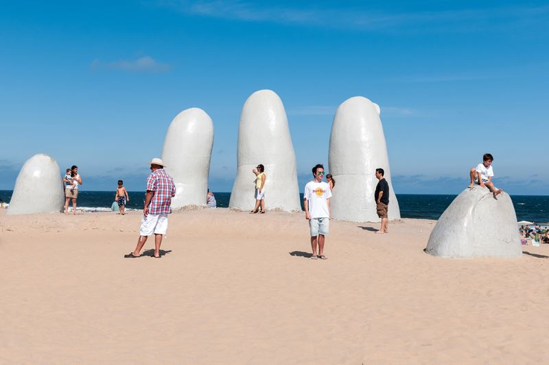
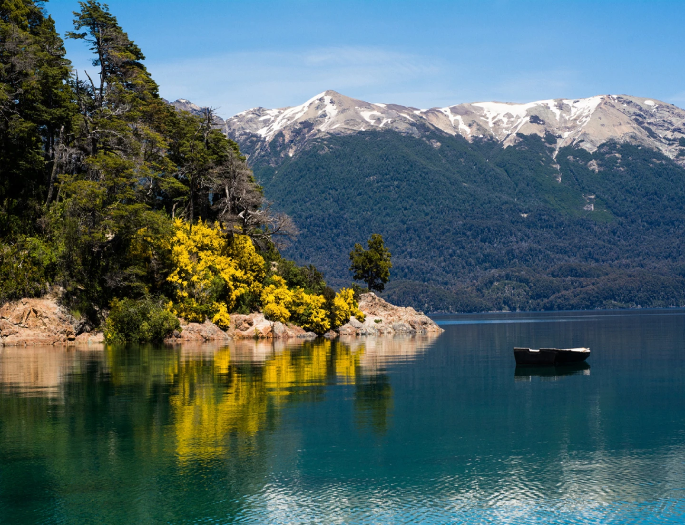

Mar del Plata
La ciudad balnearia más popular de Argentina, con playas extensas, una animada vida nocturna y el histórico puerto donde se puede ver a los lobos marinos.
⬇️Descargar itinerario (PDF)Playa y montaña, elegí tu próxima escapada
Seleccioná playa o montaña para ver, de forma estática, los destinos disponibles en esa categoría.
Tocá "Playa" o "Montaña" arriba para mostrar los destinos de esa categoría.
La ciudad balnearia más popular de Argentina, con playas extensas, una animada vida nocturna y el histórico puerto donde se puede ver a los lobos marinos.
⬇️Descargar itinerario (PDF)
Balneario elegante con playas Mansa y Brava, paseos por el puerto y la icónica escultura "La Mano en la Arena".
⬇️Descargar itinerario (PDF)
Playas rodeadas de bosque de pinos, ideal para combinar descanso, deportes acuáticos y paseos por Cariló.
⬇️Descargar itinerario (PDF)
Rodeada de lagos y montañas, es un clásico para el trekking, el esquí y el famoso chocolate artesanal.
⬇️Descargar itinerario (PDF)
El pico más alto de América, un desafío para andinistas y un paisaje imponente para quienes prefieren solo contemplarlo.
⬇️Descargar itinerario (PDF)
Punto de partida del Circuito de los Siete Lagos, con montañas, bosques nativos y el Cerro Chapelco.
⬇️Descargar itinerario (PDF)